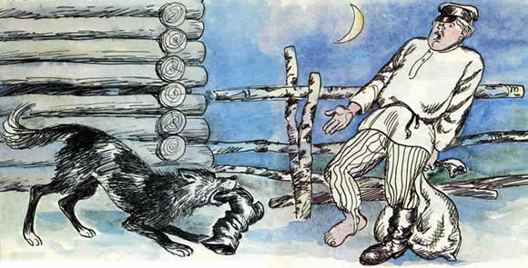
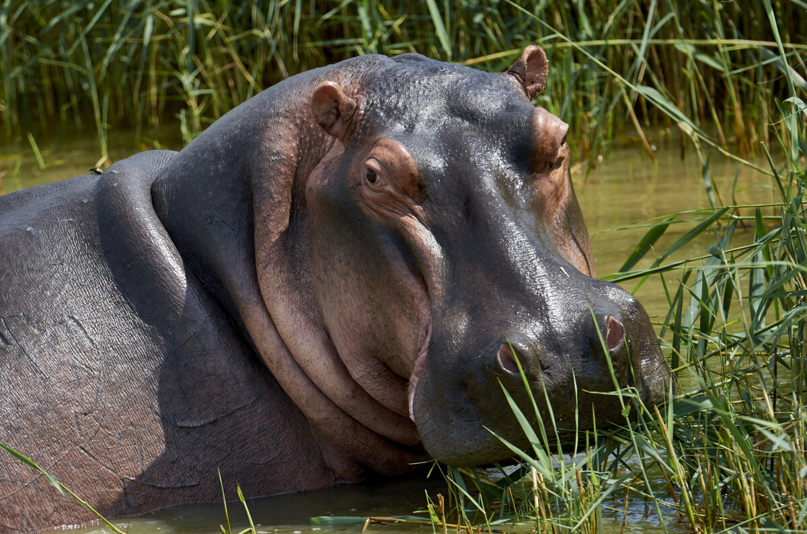

Подошёл ночью вор ко двору. Собака почуяла его и начала лаять. Вор достал хлеба и кинул собаке. Собака не взяла хлеб, бросилась на вора и стала его кусать за ноги.
За что ж ты меня кусаешь? Я тебе хлеба даю, — сказал вор.
— А за то кусаю, что, пока ты хлеба не давал, я ещё не знала, хороший ты или злой человек, а теперь верно знаю, что ты недобрый человек, если меня подкупить хочешь!!!
Обыкнове́нный бегемо́т, или гиппопота́м (лат. Hippopótamus amphíbius), — млекопитающее из семейства бегемотовых отряда парнокопытных, единственный современный вид рода Hippopotamus.
Характерной особенностью бегемота является его полуводный образ жизни — бо́льшую часть времени он проводит в воде, выходя на сушу лишь ночью на несколько часов для кормёжки.
Бегемот обитает только у пресных водоёмов, хотя может изредка оказываться в море.
 "Вторая страница сайта"